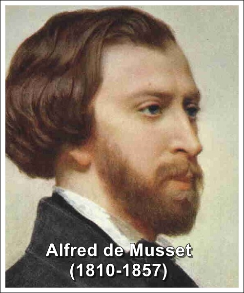

Alfred De Musset

."Nhà thơ vô cùng đáng tiếc”, Saint-Beuve đạo đức giả đã nhận xét về ông như thế. Nhưng Musset không phải là đứa con hư đốn. Tác giả Những lời thú nhận của đứa con thế kỷ đến bây giờ không hề lỗi thời, vì thực ra ông không thuộc về thế kỷ của mình. Frank Lestringant đào sâu vào thế giới nội tại của chủ nghĩa lãng mạn trong văn học Pháp và vẽ ra chân dung của nhà thơ với một gam màu và một giọng điệu hiếm hoi trong cuốn sách tiểu sử Alfred de Musset dày 835 trang đã được xuất bản.
Alfred de Musset (1810-1857) có đủ cái để thỏa mãn. Trước hết là vẻ đẹp: Chàng trai tóc vàng khôi ngô có dáng người dong dỏng, trang nhã trong bộ quần áo lôi thôi. Tiếp đó là tài năng hay sự viết lách dễ dàng của ông, cái mà đôi khi làm ông tự bằng lòng ít nhiều. Là ngôi sao trong số những ngôi sao như Victor Hugo, Gustave Flaubert, Alphonse Daudet… một thế hệ nghệ sĩ tuyệt đỉnh, bị lạc hướng vì một thời đại quá im ắng sau chấn động xã hội kinh hoàng của nền cộng hòa và của đế chế.
Thế chỗ những nhà chuyên chế hào phóng và đáng ngờ là những ông vua cha căng chú kiết, một thế phẩm của hoàng đế, và những chính khách tư sản. Cho nên, những lý tưởng vĩ đại đã khô cạn và người ta khám phá ra một lẽ sống khác theo khuôn mẫu Đức: Sự sùng bái tình cảm (vì sự sùng bái lý tính đã kết thúc dưới máy chém). Sự sùng bái cái tôi, cái tôi buồn bã thê lương một cách định mệnh và say sưa; cái tôi mà những ngôi sao nói trên từng say mê đắm đuối: Hugo, Vigny, Lamartine, mà người thủ lĩnh hàng đầu của nó và cả hình ảnh của chủ nghĩa lãng mạn, là Alfred de Musset.
Người ta có thể nói mọi điều không hay về Musset, (hơn nữa về Baudelaire và Rimbaud, khi cảm thấy bị xúc phạm vì sự “lười lẫm thiên thần” của họ), nhưng phải thừa nhận rằng Musset đã chọn đúng vai của mình giống như những diễn viên nhập được vào một nhân vật mà mình đóng, với một ý chí tuyệt vọng được sự hỗ trợ bởi sự lăn lóc trong tình trường và nỗi đắng cay. Với một thân hình nhỏ nhắn, không giàu sang nhưng rất quý phái, con người một thời có nhiều dan díu, Alfred de Musset dao động giữa những người đàn bà giới xã giao và những cô gái điếm. Lúc này, những hình mẫu từ thế kỷ XVIII, thế kỷ ánh sáng, mà những tia sáng bị rây lọc, chỉ còn lờ mờ chiếu sáng đến những kẻ say mê cái thái quá này. Nhưng tại sao người ta lại không nghĩ đến Jean-Jacques Rousseau và Mme de Warens khi Musset tự để mình đụng vào những bộ ngực của những công nương hay các bà hầu tước mà ông gọi là các bà mẹ đỡ đầu của mình? Và tại sao không nghĩ đến chàng kỵ sĩ nồng cháy Faublas săn đuổi những cô nương trong bộ váy áo phồng? Bởi với tất cả cái chất đàn ông của mình, Alfred de Musset lại đầy chất nữ tính, mà chỉ có chất nữ tính mới thực sự quyến rũ được nữ giới.
Và chính vì thế mà George Sand đã xuất hiện trong đời ông. Bà là con người nổi tiếng, cứng cỏi và than van, cũng nhẹ dạ và trần tục. Hơn nữa lại hút xì gà và thích mặc đồ con trai. Người đàn bà đó có tất cả để thỏa mãn một chàng Alfred nữ tính. Họ yêu nhau, xâu xé nhau và theo cách của họ, viết ra những tác phẩm giống như cặp Aragon và Elsa. Họ không đóng kịch hài mà say mê loại ca kịch mùi mẫn, tạo ra những màn kịch trước công chúng cũng như cho chính bản thân họ. Tình yêu, con quỷ mà họ tạo ra, đã đi vào sử sách. Những tuyệt tác của họ liên quan đến mối tình đó, của cả Musset lẫn Sand, cả thơ và tiểu thuyết. Cả hai đều không nói lên lời cuối và cũng không hắt ra ngọn lửa cuối cùng. Chopin chờ đợi George Sand còn Rachel thì chờ đợi Musset. Nhưng văn học và sự cố ngẫu nhiên đã dệt lên một cách đẹp đẽ biết bao những gắng gỏi mà những cặp yêu đương khốc liệt, thù hận và không trung thành ấy đã lưu lại với lịch sử như là một cặp tình trong huyền thoại tình yêu...
Alfred de Musset đã có mọi thứ để thỏa mãn, nhưng cũng để mà bất mãn. Ngày xưa, người ta không tán đồng chất méo mó bạo liệt của ông trong tình yêu, sự yếm thế và tính vị kỷ của ông. Nhưng bây giờ, thật nghịch lý, những đầu óc mạnh mẽ lại tôn vinh ông. Ông không còn là kẻ bị nguyền rủa mà là kẻ tiếng tăm. Nằm nửa vời giữa Jean - Jacques Rousseau và Proust, Musset không chỉ là ngọn đèn pha của chủ nghĩa lãng mạn Pháp mà còn là gạch nối giữa các thời đại, hành trình thiết yếu giữa hai thời đại không cùng chung biên giới.
Cuốn lịch sử Alfred de Musset vừa ra đời của Frank Lestrigant, với cặp mắt sắc sảo, sự khinh khoái và chất “humua” của tác giả, đã cho ta biết ra những điều đó. Nhờ ông, chúng ta có được một Musset được chào đón và yêu mến. Cũng giống như trong cuốn sách của ông Những thú nhận của đứa con thế kỷ, những lời thú nhận đó liên quan đến nhiều thế kỷ.
Một đứa con không thế kỷ
47. Đấy là con số năm mà cuộc sống dành cho ông. Đấy là một nhân vật khó nắm bắt, say sưa nhưng uyên bác. Bài diễn văn nhận chức Viện sĩ hàn lâm Pháp như thể do một con rối mất tiếng và bự phấn nói lên. Không nồng cháy như Nerval, nhưng rực rỡ hơn Baudelaire, Musset có một vị trí riêng biệt trong dòng văn học lãng mạn. Mệt mỏi vì sự chán chường của mình, ông bừng lên với ngàn tia sáng: Những tập sách bướm, thơ, kịch, phê bình, văn xuôi. Ngòi bút của ông luôn chảy khoáng hoạt đến lạ kỳ với những câu chữ vuốt ve ngọt ngào mà Baudelaire cho là đáng ghét và tư sản. Nhưng Musset thờ ơ với mọi chuyện, từ văn phong, thể loại, giọng điệu, đến ý kiến, tuy chính ông viết ra. Chỉ có một cái mà ông thích thú thực sự như ông từng nói: “Đến tột cùng”. Ông không tung chúng ta lên cao như Vigny, cũng không hạ thấp chúng ta như Baudelaire. Ông vẫn chỉ là kẻ chân đất với nỗi đau làm người. Khi ông cười còn đau đớn hơn là khi ông khóc, mà ông ít khi cười lên. Ông chỉ cười chăng trong bóng đêm, không bao giờ trên mặt giấy. Ông nói: “Cái tình cảm ấy rất khó chịu”. Khi chết, những người tình của ông, để bù đắp lại những điều không hay mà họ mang đến cho ông, đã lãng mạn hóa ông và vô tình gọi ông là “hắn” trong lời điếu tang. “Hắn”, tóm lại, chẳng có tên và không tính cách. Điều đó hẳn không làm ông mếch lòng.
[1] 1810-1857